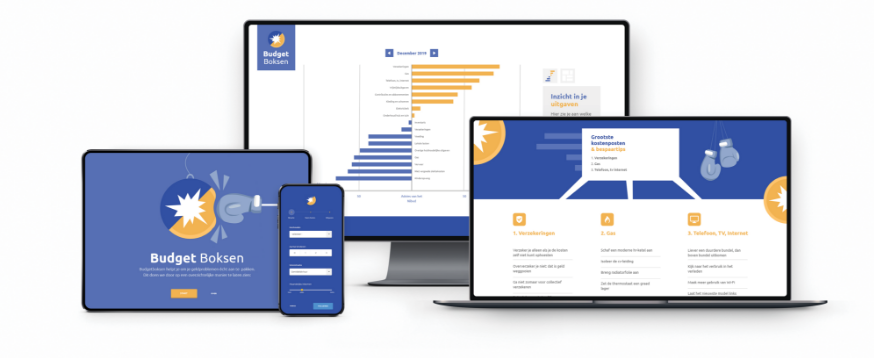
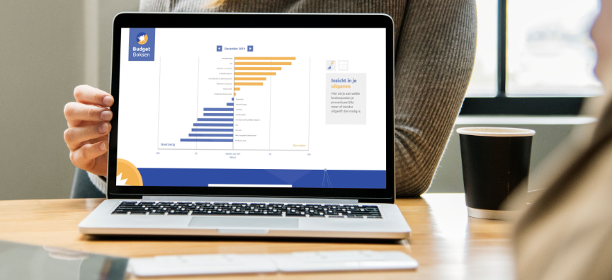

2019 / 2020
Nibud Budgethandboek
UX / UI Design, schoolopdracht

Het Nibud is een stichting die onderzoek doet naar de huishoudportomonee. Daarnaast informeert en adviseert de stichting huishoudens over financiën. De hulpvraag van het Nibud was als volgt: Ontwerp een tool voor het Budgethandboek met daarin begrotingen en informatie over de uitgaven cijfers.
Tijdens het project waren de rollen verdeeld. We hebben ons samen gefocust op concepting, maar daarna zijn onze wegen gesplitst in ux/ui design, interactie en techniek. Deze rolverdeling was in principe het uitgangspunt, maar waar nodig hielpen wij elkaar. Dit was mogelijk, omdat wij alle drie dezelfde basis hebben.
Wij ontworpen Budget Boksen. Een digitale tool die helpt om je geldproblemen écht aan te pakken. Dit doen we door op een inzichtelijke en overzichtelijke manier te laten zien:
Onze doelgroep waren mensen die geen inzicht meer hebben in hun financiële situatie en hulp zoeken bij een budgetcoach. Om hun situatie, wensen en frustraties in kaart te brengen maakten wij twee persona's.

Het werkt als volgt. Allereerst vul je je maandelijkse uitgaven in. Je krijgt dan een datavisualisatie te zien die laat zien waar jouw uitgaven groter zijn dan het referentiebudget.
Voor jouw 3 hoogste kostenposten krijg je algemene tips, over hoe je die uitgaven kunt terugdringen.
De tool wordt door de budgetcoach geïntroduceerd aan een cliënt en is bedoelt om het gesprek te starten.